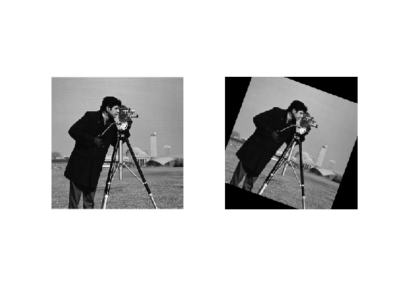
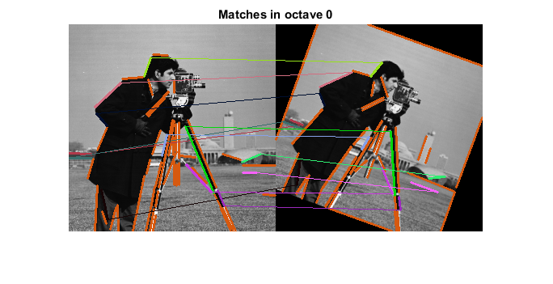
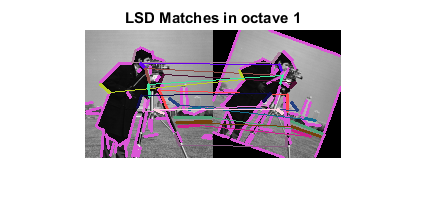

Line descriptors matching demo
This example shows the functionalities of line descriptors matching furnished by cv.BinaryDescriptorMatcher class.
This module shows how to extract line segments from an image by 2 different methods: First segmenting lines with Line Segment Detector cv.LSDDetector, and then (or just) using the Binary Descriptor to get the lines and give them a descriptor cv.BinaryDescriptor. Finally, we can then match line segments using the cv.BinaryDescriptorMatcher class.
Sources:
Contents
Matching among descriptors
If we have extracted descriptors from two different images, it is possible to search for matches among them. One way of doing it is matching exactly a descriptor to each input query descriptor, choosing the one at closest distance.
Sometimes, we could be interested in searching for the closest k descriptors, given an input one. See cv.BinaryDescriptorMatcher.knnMatch
In some cases, we could have a search radius and look for all descriptors distant at the most r from input query. See cv.BinaryDescriptorMatcher.radiusMatch
Images
% load images if false img1 = cv.imread(fullfile(mexopencv.root(),'test','books_left.jpg'), 'Color',true); img2 = cv.imread(fullfile(mexopencv.root(),'test','books_right.jpg'), 'Color',true); else im = which('cameraman.tif'); if isempty(im), im = fullfile(mexopencv.root(),'test','blox.jpg'); end img1 = cv.imread(im, 'Color',true); M = cv.getRotationMatrix2D(round([size(img1,2) size(img1,1)]./2), -20, 0.9); img2 = cv.warpAffine(img1, M); end % create binary masks mask1 = ones(size(img1,1), size(img1,2), 'uint8'); mask2 = ones(size(img2,1), size(img2,2), 'uint8'); subplot(121), imshow(img1) subplot(122), imshow(img2) whos img1 img2 mask1 mask2
Name Size Bytes Class Attributes img1 256x256x3 196608 uint8 img2 256x256x3 196608 uint8 mask1 256x256 65536 uint8 mask2 256x256 65536 uint8
BinaryDescriptor: Detect and Compute
% create a BinaryDescriptor object with default parameters bd = cv.BinaryDescriptor(); % compute lines and descriptors [keylines1, descr1] = bd.detectAndCompute(img1, 'Mask',mask1); [keylines2, descr2] = bd.detectAndCompute(img2, 'Mask',mask2); whos keylines1 keylines2 descr1 descr2 % select keylines from first octave and their descriptors idx = ([keylines1.octave] == 0); keylines1 = keylines1(idx); descr1 = descr1(idx,:); idx = ([keylines2.octave] == 0); keylines2 = keylines2(idx); descr2 = descr2(idx,:);
Name Size Bytes Class Attributes descr1 53x32 1696 uint8 descr2 46x32 1472 uint8 keylines1 1x53 79208 struct keylines2 1x46 68848 struct
BinaryDescriptor: Match
% create a BinaryDescriptorMatcher object bdm = cv.BinaryDescriptorMatcher(); % require match matches = bdm.match(descr1, descr2) % select best matches MATCHES_DIST_THRESHOLD = 25; good_matches = ([matches.distance] < MATCHES_DIST_THRESHOLD); fprintf('number of good matches = %d\n', nnz(good_matches)); % plot matches outImg = cv.drawLineMatches(img1, keylines1, img2, keylines2, matches, ... 'MatchesMask',good_matches); figure, imshow(outImg) title('Matches in octave 0')
matches =
1×53 struct array with fields:
queryIdx
trainIdx
imgIdx
distance
number of good matches = 12
LSDDetector: Detect and Compute
% create an LSD detector lsd = cv.LSDDetector(); % detect lines keylines1 = lsd.detect(img1, 'Scale',2, 'NumOctaves',2, 'Mask',mask1); keylines2 = lsd.detect(img2, 'Scale',2, 'NumOctaves',2, 'Mask',mask2); whos keylines1 keylines2 % compute descriptors for lines descr1 = bd.compute(img1, keylines1); descr2 = bd.compute(img2, keylines2); whos descr1 descr2 % select lines and descriptors from second octave idx = ([keylines1.octave] == 1); keylines1 = keylines1(idx); descr1 = descr1(idx,:); idx = ([keylines2.octave] == 1); keylines2 = keylines2(idx); descr2 = descr2(idx,:);
Name Size Bytes Class Attributes keylines1 1x230 341168 struct keylines2 1x208 308608 struct Name Size Bytes Class Attributes descr1 230x32 7360 uint8 descr2 208x32 6656 uint8
LSDDetector: Match
% compute matches matches = bdm.match(descr1, descr2) % select best matches good_matches = ([matches.distance] < MATCHES_DIST_THRESHOLD); fprintf('number of good matches = %d\n', nnz(good_matches)); % plot matches img1 = cv.resize(img1, 0.5, 0.5); img2 = cv.resize(img2, 0.5, 0.5); outImg = cv.drawLineMatches(img1, keylines1, img2, keylines2, matches, ... 'MatchesMask',good_matches); figure, imshow(outImg) title('LSD Matches in octave 1')
matches =
1×64 struct array with fields:
queryIdx
trainIdx
imgIdx
distance
number of good matches = 16
